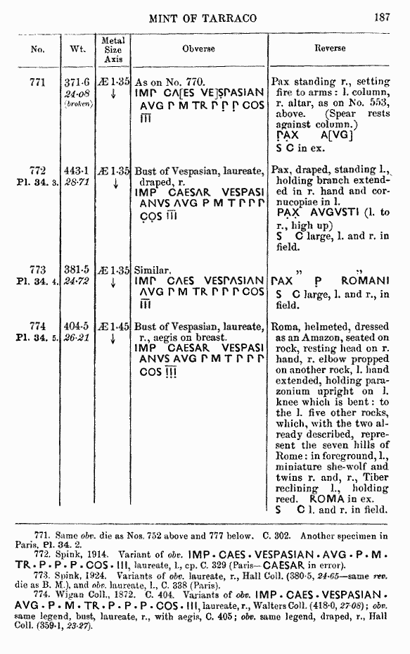
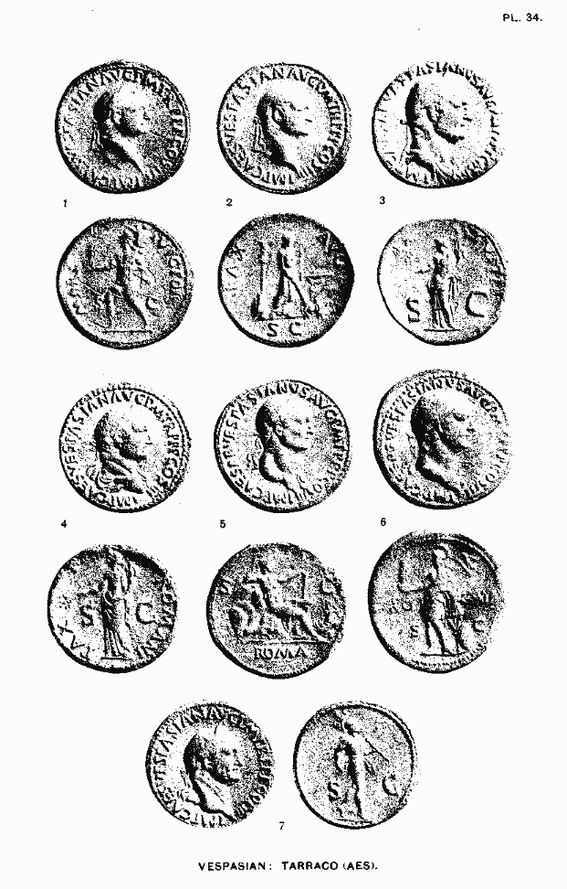

http://biblelight.net
Scans from Coins of the Roman Empire in the British Museum,
Volume 2, Vespasian To Domitian, by Harold Mattingly and R.A.G. Carson,
published in London by the British Museum, 1966, page 187 [no. 774, plate 34.5].


http://biblelight.net |